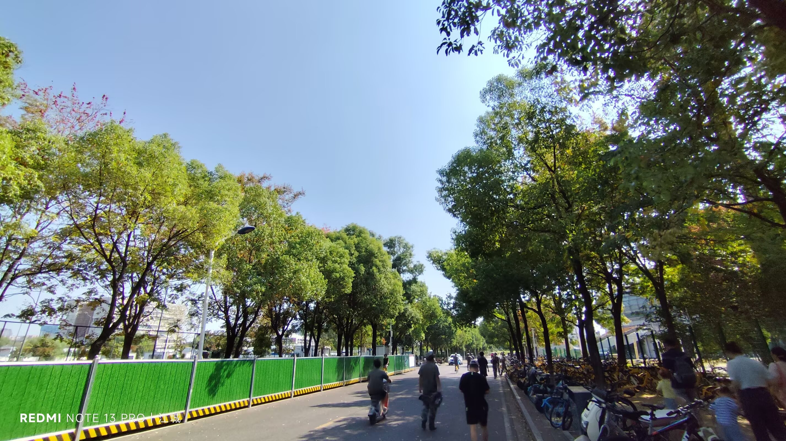
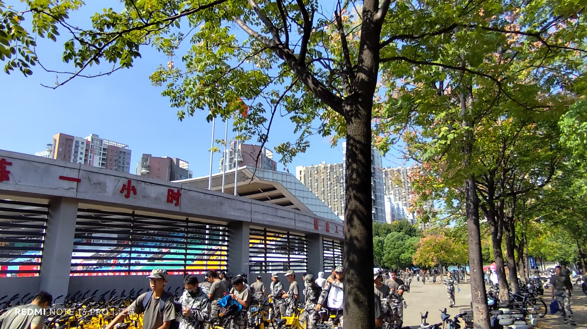
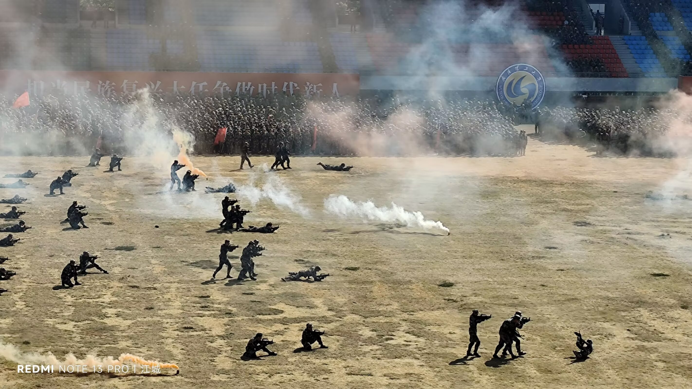
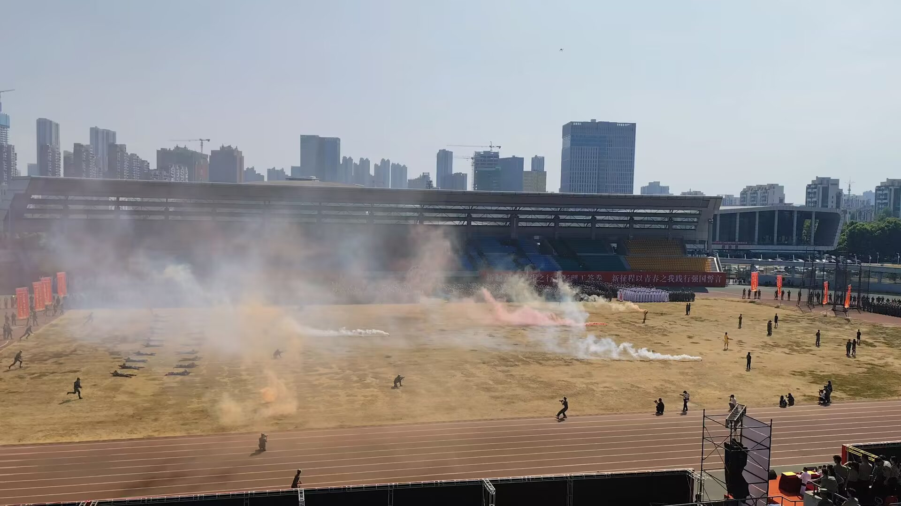
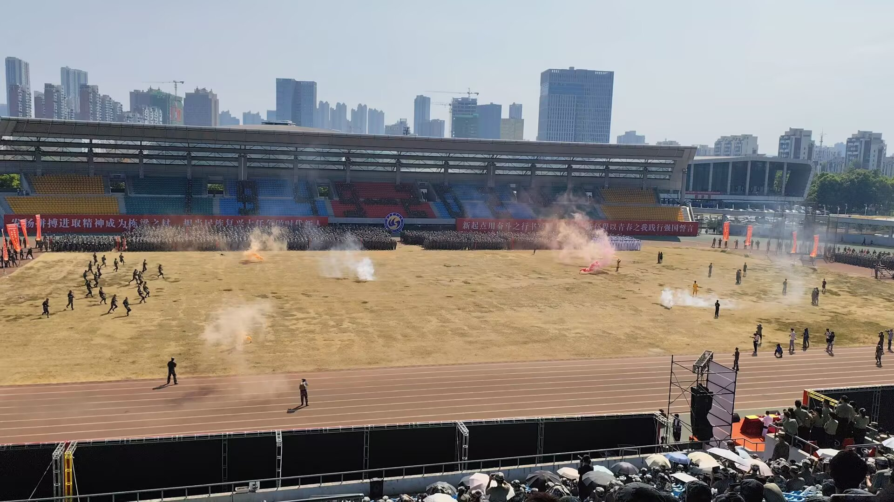
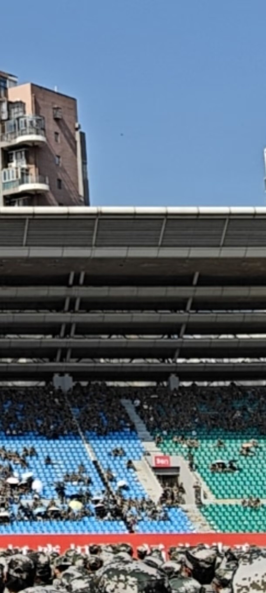
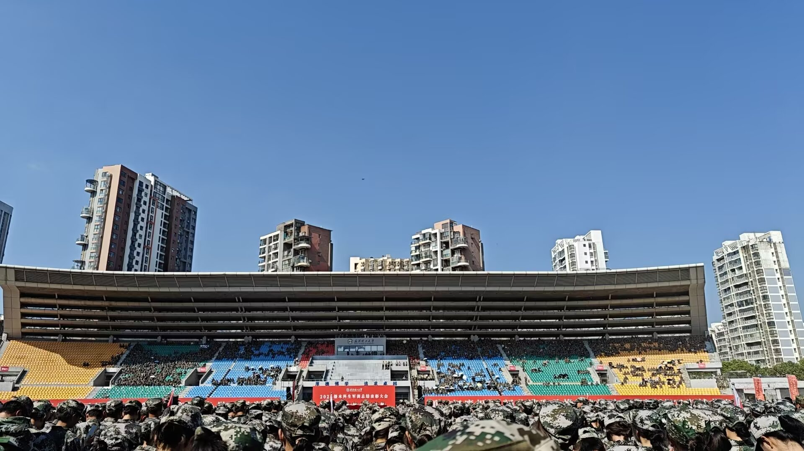
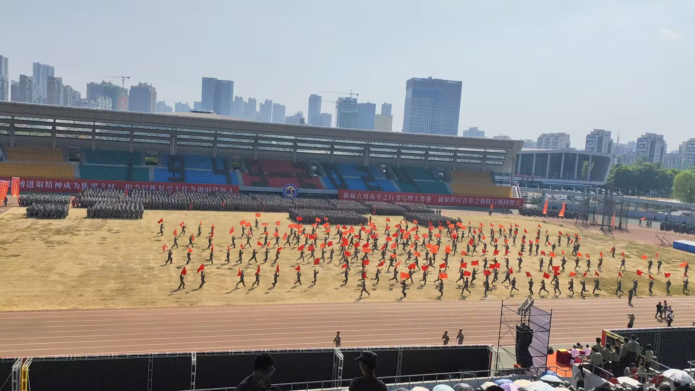
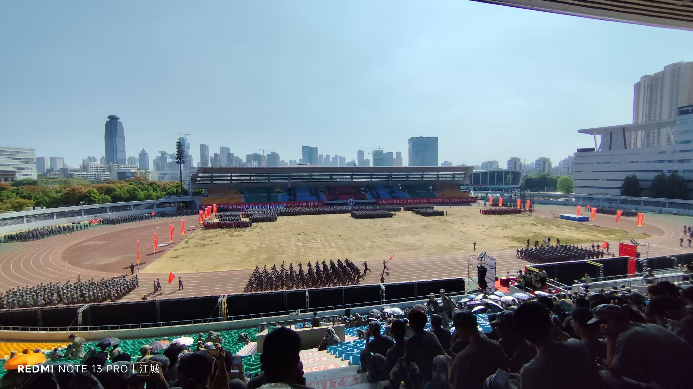
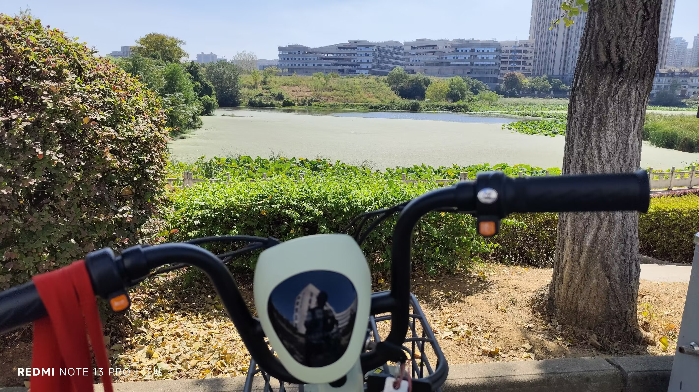

Journal · 2024-09-28
湖北省武汉市
从东湖到南湖， 虽有清早之奔驰， 却无风尘之劳苦。










From East Lake to South Lake, though there was the early-morning dash, there was no toil from wind and dust.
Du lac de l'Est au lac du Sud, malgré la course du petit matin, point de fatigue du vent et de la poussière.
Vom Ost-See zum Süd-See, trotz des morgendlichen Ritts, keine Mühsal von Wind und Staub.